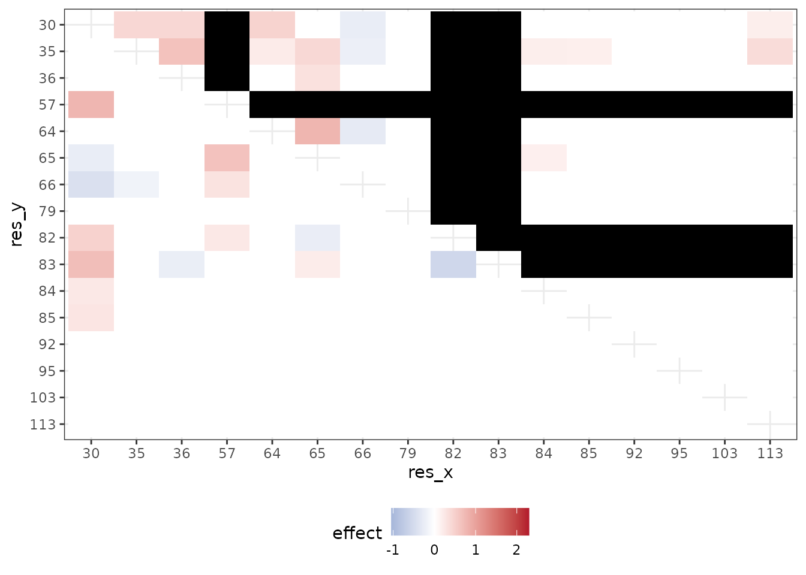

Synergistic epistasis in binding affinity landscapes
Source:vignettes/study-phillips-bnabs.Rmd
study-phillips-bnabs.RmdThis study uses the data of the binding affinites published by Phillips et al. (2021)\(^1\).
The Data
The data is comprised of a nearly combinatorially complete library for two broadly neutralizing anti-influenza antibodies (bnAbs), CR6261 and CR9114. This dataset includes almost all combinations of one-off mutations that distinguish between germline and somatic sequences which total to 11 heavy-chain mutations for CR6261 and 16 heavy-chain mutations for CR9114. Theoretically, a combinatorially complete dataset for 11 and 16 mutations will have 2,048 and 65,536 samples, respectively. In this particular study, we have have access to \(N =\) 1,812 complete observations for CR6261 and \(N =\) 65,091 complete measurements for CR9114. The traits are binding affinities of the two antibodies to different influenza strains.
Download the data for the broadly neutralizing antibodies here:
Multivariate MAPIT Analysis
For our analysis with mvMAPIT, residue sequence information was encoded as a binary matrix with the germline sequence residues marked by zeros and the somatic mutations represented as ones. As quantitative traits, Phillips et al. (2021) measure the binding affinity of the two antibodies to different influenza strains. Here, we assess the contribution of epistatic effects when binding to \(H_1\) and \(H_9\) for CR6261, and \(H_1\) and \(H_3\) for CR9114.
Load the data
The following script was used to convert the csv-files into matrices that can be directly input into mvMAPIT.
data.files <- c("elife-71393-fig1-data1-v3.csv", "elife-71393-fig1-data2-v3.csv")
data1 <- read.csv(file = data.files[1])
data2 <- read.csv(file = data.files[2])
data1names <- c(30, 35, 36, 57, 64, 65, 66, 79, 82, 83, 84, 85, 92, 95, 103, 113)
data2names <- c(29, 35, 65, 66, 69, 82, 83, 84, 85, 87, 112.1)
data1map <- as.data.frame(list(
pos = sprintf("pos%d", c(1:16)),
term = data1names
))
data2map <- as.data.frame(list(
pos = sprintf("pos%d", c(1:11)),
term = data2names
))
phenotype1 <- data1[, endsWith(names(data1), "mean")]
genotype1 <- data1[, startsWith(names(data1), "pos")]
phenotype2 <- data2[, endsWith(names(data2), "mean")]
genotype2 <- data2[, startsWith(names(data2), "pos")]
colnames(genotype1) <- data1names
colnames(genotype2) <- data2names
CR9114 <- list("phenotype" = phenotype1, "genotype" = genotype1, "map" = data1map)
CR6261 <- list("phenotype" = phenotype2, "genotype" = genotype2, "map" = data2map)Apply mvMAPIT
We apply the mvMAPIT framework to protein sequence data from Phillips et al (2021)\(^1\).
Apply mvmapit() to the data by running the following.
Plot the mvMAPIT results
The package contains a data object with the results. This data is part of the namespace and accessible as phillips_data. It contains tibbles with the main column for inference being the \(P\)-values.
We report results after running mvMAPIT and combined \(P\)-values with Fisher’s method. We show Manhattan plots for \(P\)-values corresponding to the trait-specific marginal epistatic tests (i.e., the univariate MAPIT model), the covariance test, and the mvMAPIT approach. Here, green colored dots are positions that have significant marginal epistatic effects beyond a Bonferroni corrected threshold for multiple testing (\(P = 0.05/11 = 4.55\times 10^{-3}\) for CR6261 and \(P = 0.05/16 = 3.13\times 10^{-3}\) for CR9114, respectively).
for_facetgrid_row <-
as_labeller(c(
`1` = "Trait #1",
`2` = "Trait #2",
`3` = "Covariance",
`4` = "Combined"
))
phillips_data$fisher$colorf <- factor(phillips_data$fisher$color,
labels = c("1",
"Significant"))
gg_fisher <- phillips_data$fisher %>%
ggplot(aes(x = position, y = -log10(pplot))) +
geom_point(aes(colour = colorf), size = 1) +
scale_color_manual(values = c("#1b9e77", "#2c2c2c"),
breaks = c("Significant")) +
scale_y_continuous(breaks = c(0, 5, 10),
labels = c("0", "5", ">10")) +
geom_hline(aes(yintercept = -log10(threshold),
linetype = "Bonferroni"),
color = "#d95f02") +
scale_linetype_manual(name = "", values = c('dashed')) +
theme_bw() +
facet_grid(row ~ species, labeller = labeller(row = for_facetgrid_row)) +
theme(
panel.grid.major.x = element_blank(),
legend.position = "bottom",
text = element_text(family = "Arial")
) +
labs(x = "Position",
y = "-log10(p)",
colour = NULL)
show(gg_fisher)Interestingly, while the univariate MAPIT approach was able to identify significant marginal epistatic effects for CR6261, it lacked the power to identify significant positions driving non-additive variation in binding affinity for CR9114. Overall, the combined trait approach in mvMAPIT revealed marginal epistatic effects for positions 29, 35, 82, 83, and 84 in CR6261, and positions 30, 36, 57, 64, 65, 66, 82, and 83 for CR9114. Most notably, these same positions were also identified as contributing to pairwise epistasis by Phillips et al. (2021).
Plot the regression analysis results
In the original study, the authors first ran an exhaustive-search to statistically detect significant interactions and then conducted downstream analyses to find that these positions are likely responsible for the antibodies binding to the influenza surface protein hemagglutinin. The regression coefficients from the exhaustive search, as reported by Phillips et al., are illustrated in the following two plots.
CR6261
gg_CR6261 <- ggplot(phillips_data$regression$CR6261,
aes(res_x, res_y, fill = effect)) +
geom_tile() +
scale_fill_gradient2(
high = "#b2182b",
mid = "white",
low = "#2166ac",
midpoint = 0,
space = "Lab",
na.value = "grey50",
guide = "colourbar"
) +
theme_bw() +
theme(legend.position = "bottom")
show(gg_CR6261)
This plot illustrates interaction coefficients when assessing binding of CR6261with \(H_1\) (lower left triangle) and \(H_9\) (upper right triangle).
CR9114
gg_CR9114 <- ggplot(phillips_data$regression$CR9114,
aes(res_x, res_y, fill = effect)) +
geom_tile() +
scale_fill_gradient2(
high = "#b2182b",
mid = "white",
low = "#2166ac",
midpoint = 0,
space = "Lab",
na.value = "#000000",
guide = "colourbar",
limits = c(min(phillips_data$regression$CR6261$effect),
max(phillips_data$regression$CR6261$effect))
) +
theme_bw() +
theme(legend.position = "bottom")
show(gg_CR9114)
This plot shows interaction coefficients when assessing binding of CR9114 with \(H_1\) (lower left triangle) and \(H_3\) (upper right triangle). Required mutations (indicated by R) are plotted in gray and left out of the analysis[^1].
Our results show that mvMAPIT identifies all required mutations in these systems as well as most positions involved in at least one epistatic pair.
References
1: Angela M Phillips, Katherine R Lawrence, Alief Moulana, Thomas Dupic, Jeffrey Chang, Milo S Johnson, Ivana Cvijovic, Thierry Mora, Aleksandra M Walczak, Michael M Desai (2021) Binding affinity landscapes constrain the evolution of broadly neutralizing anti-influenza antibodies eLife 10:e71393 https://doi.org/10.7554/eLife.71393